(Gif by Idil Gözde for PublicSource's Three Rivers Rising project,
which I designed, developed and art directed.)
I manage the publicsource.org Wordpress site and design/develop our off-CMS project microsites. I'm passionate about digital storytelling experimentation and designing ways to deepen journalism's connections with communitities. My goal is to create meaningful, educational and engaging experiences for readers. Below is a sampling of my website work.
I also design and develop single story page formats, quizzes, maps, infographics and data pages. Here are a few links.
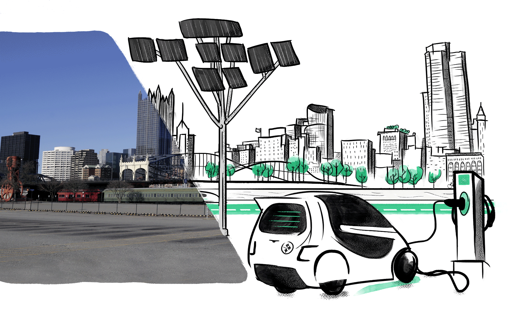Three Rivers Rising - Design/Development/Art Direction
Description: This project focused on Pittsburgh's climate action plan. We knew we were going to lack strong photos for this series because it was a project based on what changes the city has to make to combat climate change — changes that hadn't happened yet at scale. I came up with the idea of marrying photos and illustrations to show Pittsburgh's past (the photos) and what a future with those climate change-fighting changes might look like (the illustrations). I knew a restricted color palette would work on this project and settled on a brighter green for the "green initiatives" and to make it feel more futuristic. I teamed up with talented illustrator & animator Idil Gözde and PublicSource videographer Ryan Loew for the photo/gifs that anchor the project. I also wanted a lot of animation on this project, because it was dealing with some pretty dense topics and we needed to lighten it up a bit. For the landing page, I came up with the idea to use fun horizontal gifs as dividers instead of just the run of the mill horizontal lines. Fun fact: This project included a 2-hour photo shoot with a Primanti Brothers sandwich!
Skills: HTML, CSS (SASS/SCSS), Javascript, Amazon Web Services, Adobe Creative Suite.
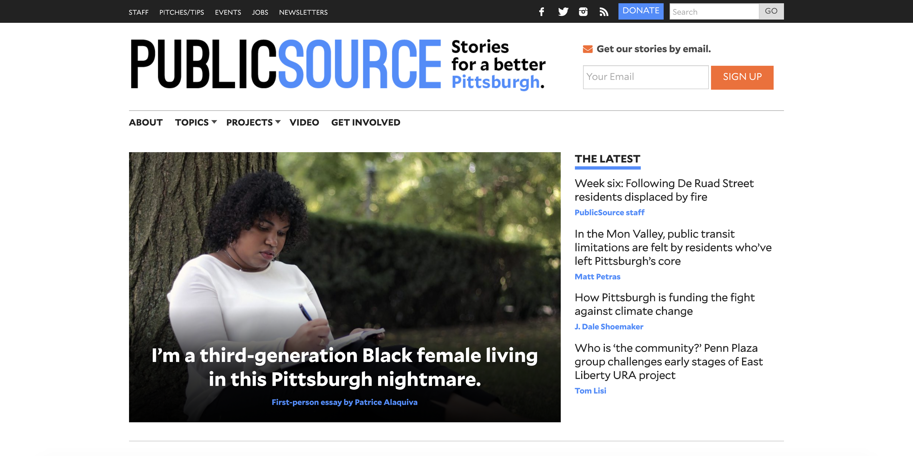PublicSource.org - Design/Project Managment
Description: In 2015, I led the redesign for the Pittsburgh news outlet's website. We migrated from a Drupal site to Wordpress. I worked closely for 5 months with Institute for Nonprofit News (INN) developers to achieve our redesign goals through their Largo Wordpress Theme framework. My goal was to create a modern look and update the site to modern web standards. At this time, we were only publishing a few stories a week, so for the homepage my goal was to create spaces for enough stories to turn over, but to also create spaces to showcase our evergreen, project and investigative work.
Skills: Wordpress, PHP, HTML, CSS (SASS/SCSS), Adobe Creative Suite, project management, patience.
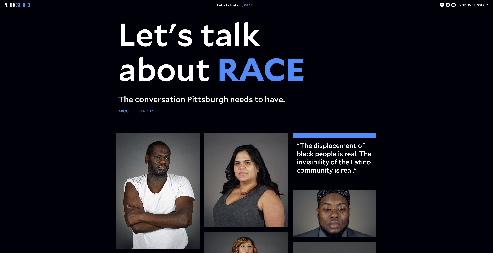Let's Talk about Race - Design/Development
Description: This was a community-driven project about race and racism in Pittsburgh featuring a series of first-person essayist. I worked closely with PublicSource videographer/photographer Ryan Loew to come up with a studio look for the author portraits. For the landing page, I knew I wanted a mix of still photographs and videos to showcase the authors and create visual interest. My main goal for this project was to create a space to highlight the stark portraits and the essayists' powerful thoughts. I co-developed this website with Cameron Scott, a brilliant Pittsburgh-based web developer.
Skills: HTML, CSS (SASS/SCSS), Javascript, Amazon Web Services, Adobe Creative Suite.
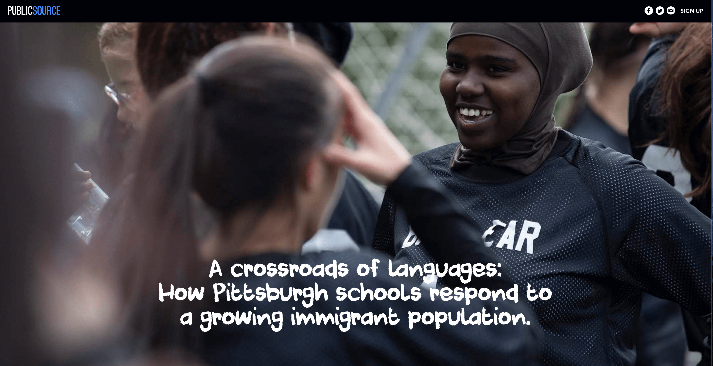A crossroads of languages: How Pittsburgh schools respond to a growing immigrant population. - Design/Development
Description: This is the first in a series about children's heath and educational outcomes in the Pittsburgh region. My goal was to create a clean story page layout with subtle movement to spark visual interest and display photos.
Skills: HTML, CSS (SASS/SCSS), Javascript, Amazon Web Services, Adobe Creative Suite.
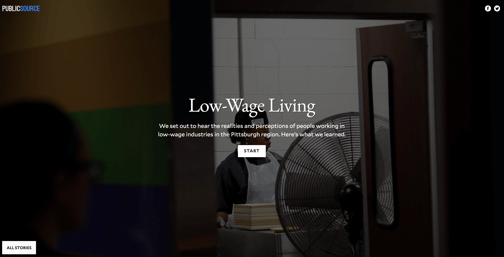Low-Wage Living - Design/Development
Description: This is a project about low-wage living realities in the Pittsburgh region. The stories are in a horizontal scroll format, which allows the reader a more engaging experience to learn about each individual's life. I co-developed this website the magnifiscent Alexandra Kanik, a data reporter and developer at Lousiville Public Media. Our goal was to create a reusable template both our newsrooms could utilize repeatedly.
Skills: HTML, CSS (SASS/SCSS), Javascript, Grunt, Lodash, Amazon Web Services, Adobe Creative Suite.
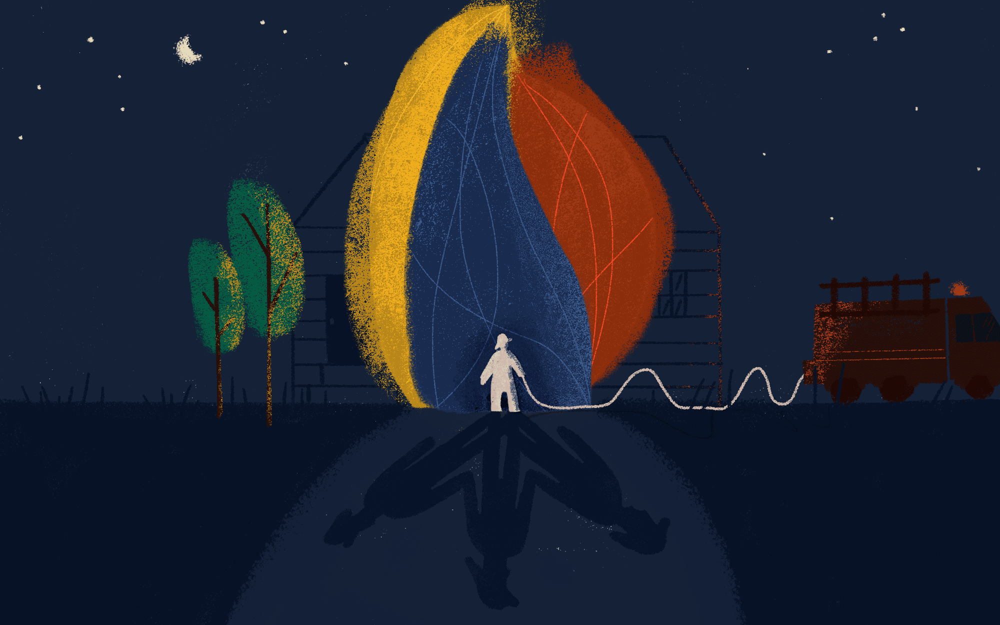 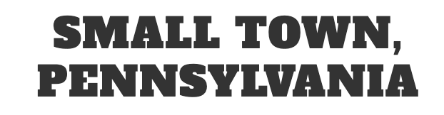Small Town, Pennsylvania - Design/Development/Art Direction
Description: This is a series that examines the challenges and opportunities of living and working in the small towns of Southwestern Pennsylvania. I worked closely with the unbelievably talented illustrator Idil Gözde to come up with a look for the art created for this project. Our goal was to create a more entertaining experience while conveying some tough subject matters.
Skills: HTML, CSS (SASS/SCSS), Javascript, Amazon Web Services, Adobe Creative Suite.
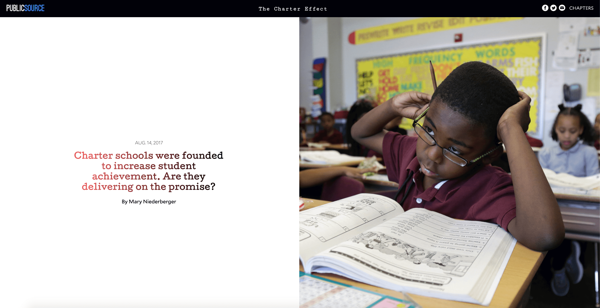The Charter Effect - Design/Development
Description: This series's goal was to expose and explain the data and records behind the charter schools operating in Allegheny County. My goal was to create an "educational" look for the stories (the typing effect on the series intro text & more stories and font choices) and to create some subtle movement on elements for visual interest.
Skills: HTML, CSS (SASS/SCSS), Javascript, Amazon Web Services, Adobe Creative Suite.
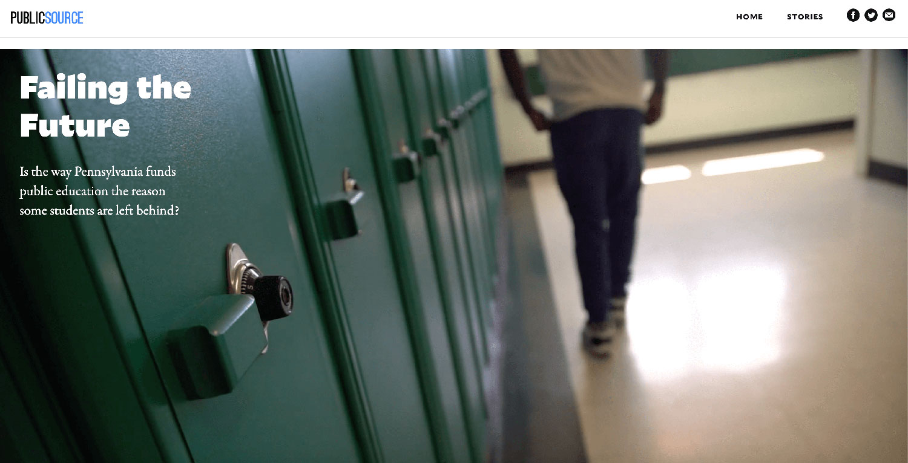Failing the Future - Design/Project Management
Description: This project focused on stark inequities across school districts in Pennsylvania. In designing this project, my goal was to create a clean layout to display stories and photos, but adding in some subtle movement to spark curiousity and interest (such as here via a four story photo grid with one photo as movable gif, scroll down a bit to see).
Skills: Wordpress, HTML, CSS (SASS/SCSS), Amazon Web Services, Adobe Creative Suite.
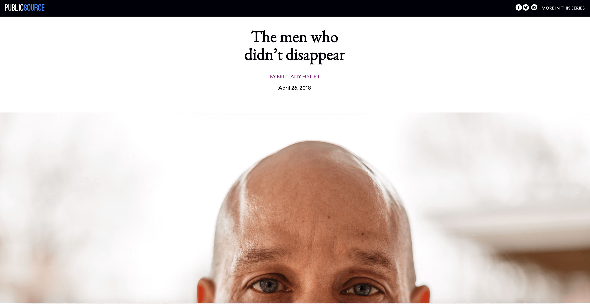The Fix - Design/Development
Description: Through this series we shared a glimpse into the lives of Pittsburghers who have been affected by the opioid epidemic. Hero images and larger pull quotes create a more emotional experience for the user. I chose a serif font and a cooler color palette for this project to convey empathy and compassion.
Skills: HTML, CSS (SASS/SCSS), Javascript, Amazon Web Services, Adobe Creative Suite.
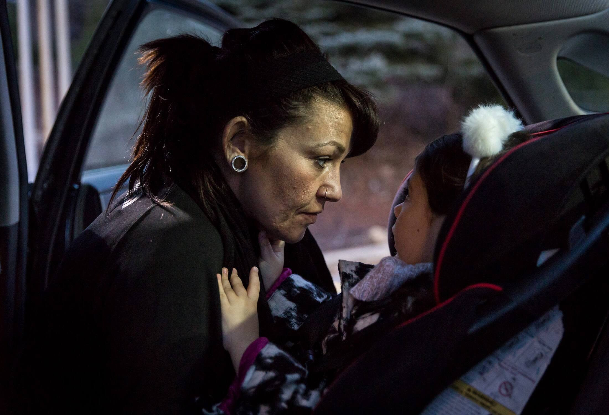Voices Unlocked - Design/Development
Description: Voices Unlocked is a project telling the stories of Pittsburgh-area residents whose life experiences have been shaped by the penal system. This was actually the first microsite I designeda and developed and think my skills have grown a lot since then, but the design elements here that I still love are the parallax on the photos and mix of font-weights.
Skills: HTML, CSS (SASS/SCSS), Amazon Web Services, Adobe Creative Suite.